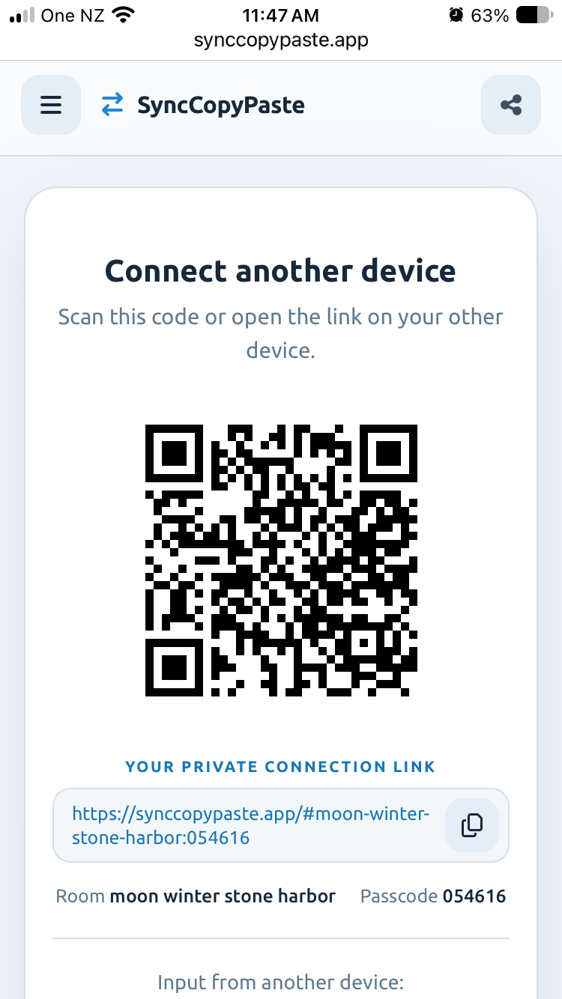
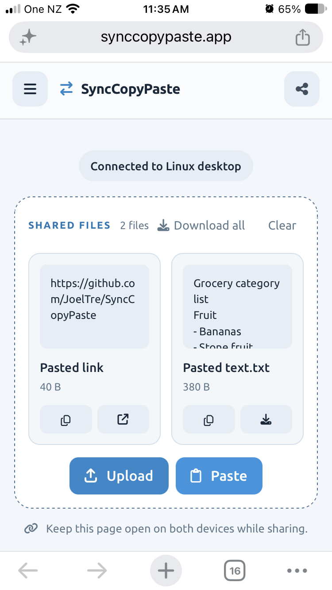

How to “AirDrop” anything between Apple and Android
You want to send a full-res photo or file from your iPhone to your friend’s Android phone, but AirDrop only works between Apple devices. Instead, you can share the files using SyncCopyPaste.
Open SyncCopyPaste on one phone, scan the QR code with the other, and then share the photo or file.
Connect your devices
- Open SyncCopyPaste on your Apple device or Android device.
- On the other device, scan the QR code shown on the first device, or open its private connection link. You can also enter the room code and passcode manually.
- Wait until both devices show that they are connected. Keep both pages open while you share.

Keep the connection link and passcode private: anyone with the link can attempt to join your room.
Send photos, videos and files
- On the sending device, tap or click Upload under Shared files and choose your photos, videos or other files. On a computer, you can also drag and drop files into the page.
- Wait for the items to appear on the receiving device. Keep both pages open during the transfer.
- Use the Download button on each item to save it. On iPhone or iPad, images may open the share sheet; choose an option such as Save Image or Save to Files. You can also use Download all for multiple items.

The same steps work from Android to iPhone, iPad or Mac, and from an Apple device to Android. You can also send text or links using Paste when your browser allows clipboard access.
How is this different from AirDrop?
AirDrop is Apple’s built-in sharing feature for Apple devices. SyncCopyPaste is a separate, browser-based tool that connects devices across platforms over the internet. It is free and open source, and does not require an account or installation.
The devices establish an encrypted WebRTC connection. If a direct route is unavailable, encrypted data can be relayed. Shared items stay in the open pages’ memory; save anything you want to keep before closing them.
Frequently asked questions
Can I AirDrop directly from an iPhone to an Android phone?
No. AirDrop itself is for Apple devices. Use SyncCopyPaste to share files between an iPhone and Android instead.
Do the devices need to be next to each other?
No. Both devices need internet access, but they do not need to be nearby. If they are apart, send the private connection link to the intended recipient through an end-to-end encrypted channel like WhatsApp.
What if a transfer does not work?
Check that both devices are online, the connection is still active and both pages remain open. Try reconnecting or sending the file again. For large files, browser memory and network conditions can affect transfers.